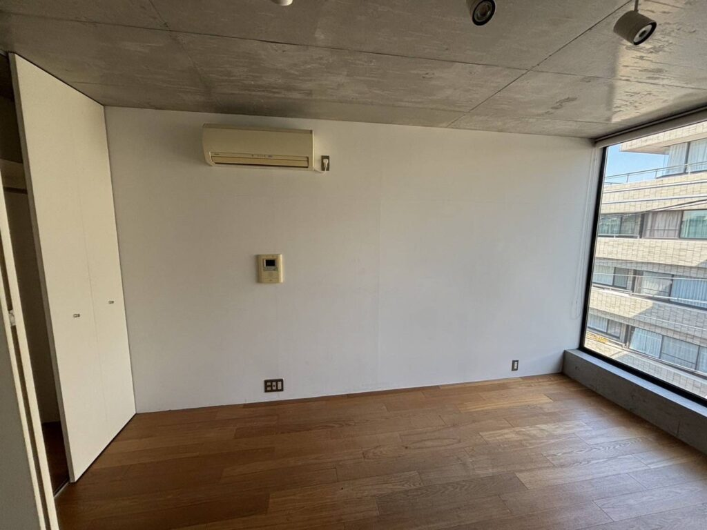
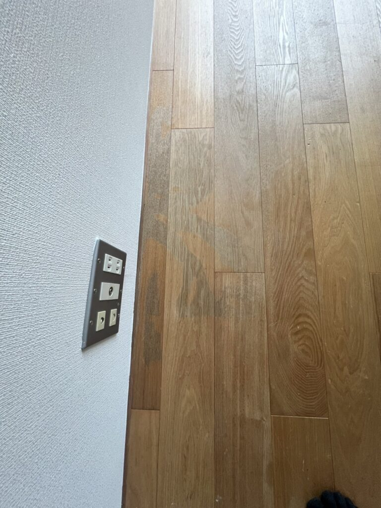
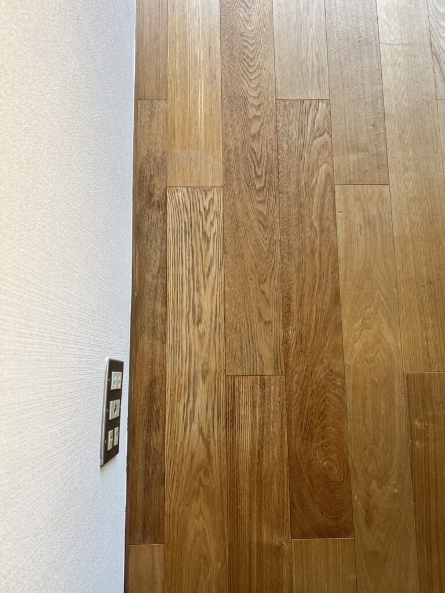
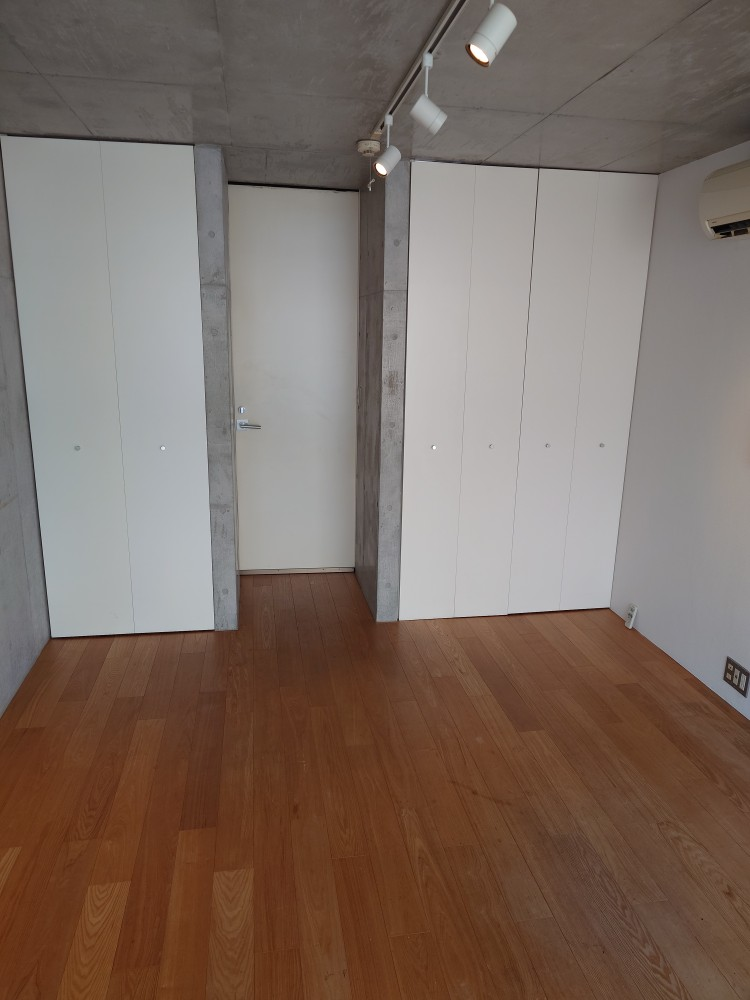

床面リペア補修をしました！壁クロス張替え、床面リペア補修などご相談下さい！
DAIZENプロフェッショナルクリーニングメソッドで、清掃クリーニングする以外に、既存の壁クロス張替え、既存の床面リペア補修などご相談下さい！新しく綺麗に生まれ変わります!




DAIZENプロフェッショナルクリーニングメソッドで、清掃クリーニングする以外に、既存の壁クロス張替え、既存の床面リペア補修などご相談下さい！新しく綺麗に生まれ変わります!



